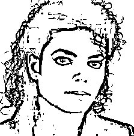

来源：https://v0bko2tq65.feishu.cn/docx/BVopdSiF8oqtifxZGK6cSX0lnEb
Coze国内版新推出了图像流的功能，类似于“ComfyUI”的东东，快速上手测试了一下，大体来说效果还不错，个别功能比较拉跨。针对几个核心功能，来看看测试效果如何。
“图像流”的功能界面，跟“工作流”很像，我上手做了一个生成学生照的功能，上传你的照片，就能快速生成学生照。直接上效果，先拿老马试试😄：
先上传老马的原图，直接生成学生照，可能是使用人数很少的原因，出图还是很快的。
嚯，整体效果还成，这锋利的下颚线，就是。。。老马你这耳朵怎么了。。。稍微有点瑕疵。
咱再斗胆试试MJ。

虽然上传的图是侧面照，但是出来的效果还挺像的，耳朵这还是有点别扭，估计是模板图的原因。
其实这块我还传了几张国内明星的照片，感觉比“歪果仁”的效果要更好一些，我把Agent的地址放出来，有兴趣可以自己测试下哈~
最后放张自己的照片试试，啧啧啧，有点东西啊。
学生照Bot地址([1]) 点不了的见文末引用。
咱娱乐归娱乐，真当个生产力工具的话，得有应用场景，证件照场景应该不错，咱再试试。
原图我就不放了，大家可以猜猜是哪位明星（国外）。
就问你，这效果硬不硬！我特意把输出结果截了图，省的说我是找的网图。地址也放这了哈，男女都能用，想要更多模板请让我知道。
证件照Bot地址([2]) 点不了的见文末引用。
总体来说，智能换脸功能还是可以的，脸部特征抓的还挺准。但是输出的清晰度一般，不知道是不是我上传图和模板图的原因，找到更合适的素材，我再来测试。
背景替换，顾名思义，就是画面主体不变，更换背景，本来想让小李子“在三亚的海边堆雪人”的，结果直接触发了系统审核，给我拒了。*#@#&
拒绝理由是：性感男性不穿上衣。话说咱们AI界现在都这么保守吗？这不是烂大街的网图吗，也没觉得有多不合适啊。
成吧，生而为人，咱得学会适应，还是请出我们老马出场吧。
先来张老马的成功人士照，场景咱们还是选择“在三亚的海边堆雪人”。图像流提供三种替换模式：
咱先甭管多少种模式，我就是想让场景中出现个雪人，就费了劲了，鼓捣半天才成功。。。了吧。
但是这雪人。。。你站这么靠前是想跟老马比身高吗？另外，你这表情嘲笑谁呢？削你信不信？脖子上围脖就带一半，还美呢你搁这。
老马让我伤了心，咱再试试其他的，据说现在车企渲染图都用AI，咱也试试。
这里还利用了官方的一个功能提示词优化，就是你给他一个提示词，他根据你的意图帮你补充完善，然后再发给大模型生图，这俩同时试试。
先喂给他一张纯背景的su7，再生成一张“沙漠，写实风格”的效果图。
你看看这两张哪个是经过提示词优化的效果？
第二张是系统优化过提示词的，我咋感觉还不如第一张呢，而且这也不写真啊。
通用背景替换不太成，咱再试试正经的。
官方贴心的设置了三种模式，适用于不同场景，我懂。咱先试试室内家居场景。
同样，扔给他一张纯色背景的商品图，这回我们选择了转椅。
同样几经折腾，选了一张生成效果最好的。
转椅边缘白边抠的不算干净，注意看在地毯上四个滚轮，使用透明底的图应该效果会好一些。画面也给人一眼假的感觉。
再试试美妆场景，官方的介绍里说的是，适用于大部分小物件的摆桌效果。成，没问题，那我们就选一款洗发水来试试。
同样纯色背景的商品图，喂给他，同时使用提示词。
本来没抱希望，结果。。。
！！！它还真支楞起来了，尤其是优化过提示词的，效果还可以。
总结一下，受限于文生图大模型能力的问题，目前生成抽象一点的场景，问题不大。但是如果是生成写实类的场景，还是给人一眼假的感觉，咱们等待官方再更新吧。
商品图背景替换Bot地址([3]) 点不了的见文末引用。
多图融合简单来说，就是使用这张图，参考那张图的风格，给我来张新的。测试下来，Coze现在基础模型生成写实风格的图片不大成，咱来个动漫风一些的试试。还是用上文提到的国外女星，参考某盲盒手办的风格来一张。
这个是参考图，同时上传女星原图，得到了新图。
风格有点混搭，介乎于写实跟动漫风之间，不过还是挺像的，就是这图跟我上传的女星有啥关系。。。咱们再结合上边的换脸功能，重新生成下。
啊，舒坦了！我把链接也放这了哈，大家自行测试。
电子写真照Bot地址([4]) 点不了的见文末引用。
咱们这次针对Coze新出的图像流的几个核心功能进行了测试，总体来说效果还是不错的。当然，受限于模型能力，有些场景还差点意思，不过随着版本迭代效果肯定会越来越好。
图像流还有几个其他的核心功能：文生图、扩图、风格化等，大家有兴趣可以点个赞，下期马上呈上。
往期作品：
我做的Agent智能体上了Coze扣子官方推荐之后……
告别手写Prompt！一句话自动生成6个结构化提示词，附工具地址。免！费！用！
[1] 学生照Bot地址: https://www.coze.cn/store/bot/7371099570463342601
[2] 证件照Bot地址: https://www.coze.cn/store/bot/7371362580344127523
[3] 商品图背景替换Bot地址: https://www.coze.cn/store/bot/7372130280066531364
[4] 电子写真照Bot地址: https://www.coze.cn/store/bot/7372208289989459980